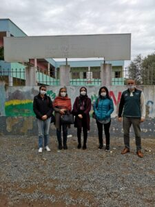
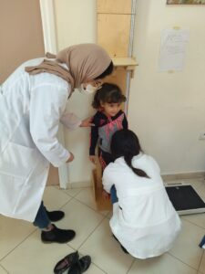
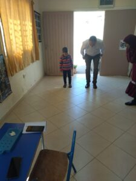

This month, we spoke with the team in Morocco about their experience participating in the SUNRISE study during the COVID-19 Pandemic.
Morocco began their data collection in 2019 collecting Phase 2 Pilot Study data. Like many of our teams, their data collection was interrupted by the COVID-19 pandemic. However, in early 2021 Morocco seized their opportunity, retrained in the Phase 3 pilot study protocol, and successfully finished their data collection within a matter of months. What an accomplishment!
Here, Chief Investigator, Dr. Asmaa EL HAMDOUCHI shares her teams’ experience.

The Covid-19 crisis has affected both our lives and the way we work and has taught us how to work and adapt in such conditions. It has also affected the way in which we conduct research work. Despite a long period of total confinement, the post-covid comparison study was conducted (Phase 3 data collection).
Under the pandemic we had to suspend data collection for the Phase 2 Pilot study.
Since our research typically relies on face-to-face interaction for data collection through interviews, focus groups and field work, it was nearly impossible to collect data online; there were no other alternatives. What was the solution?
This pandemic led me to reflect on how we do things. It was an opportunity to take time to pause and reflect on whether data collection can be postponed and how the data collection could be restarted. I have focused a lot on desk-based aspects of the research (writing up a report/presentation with the preliminary data, preparing an advocate for key people, reflecting on the way we conducted workshops for parents, etc.; in other words, the way we were doing things). As a result, we had the full support and commitment of the Division of sport and education to begin recommencing face-to-face research.
Many things about how we work changed positively because of this crisis. Our manner to do workshops with parents to encourage them to participate was one of these things.
Once schools opened their doors, we were able to access them by respecting all measures including social distancing and hygiene, and restart field work. Recruitment went well, and despite the new conditions, we were able to engage a fairly good number of children.
I would like to say thank you to my wonderful team through this small paragraph; Dr. imane el menchawy, Dr. mehdi azlaf, Dr. issad baddou, Dr kaoutar benjeddou, Ms Najat outbout. Without forgetting all the persons who facilitated the steps and the access to the schools, I quote, the director of the Direction of Promotion of the School Sport, Mr Mili Abdesslam. Mrs Amesri Fatima, Mr Yahya Mkadmi, Mr. Mustapha Mamnaout, Mrs Ikram Bouayad, from the Ministry of National Education. I would like also to thank the Directors educators, parents, and children.